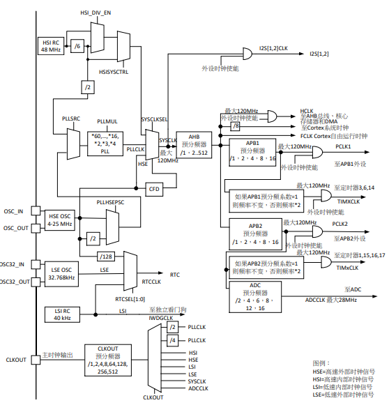
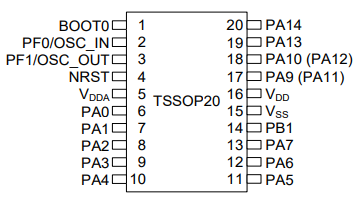
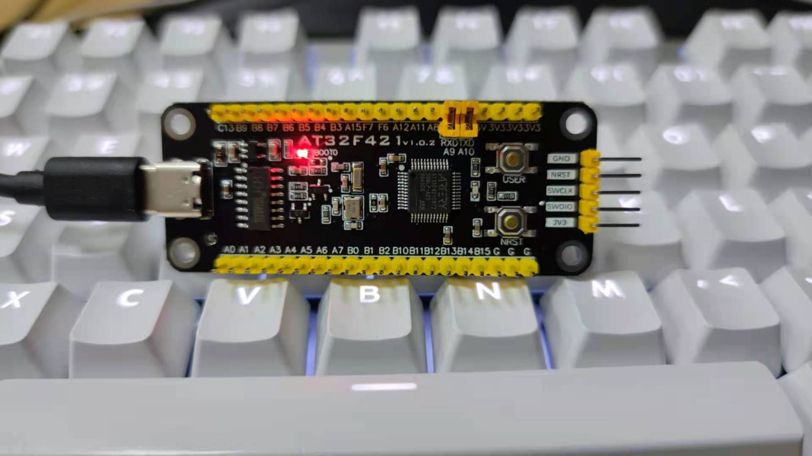

AT32F421¶
标签 : Cortex-M4 120MHz COMP sLib ERTC TSSOP20
Xin简介¶
规格参数¶
Arterytek Cortex-M4 单核 MCU，高达120MHz的CPU运算速度与内建数字信号处理器(DSP)，最高可支持64KB闪存存储器(Flash)及16KB随机存取存储器(SRAM)
片上集成了多达2个USART、2个SPI(可复用I²S)、2个I²C、1个16位高级定时器、5个16位通用定时器，和5通道DMA控制器。 同时还扩展了1个高速轨到轨输入/输出模拟电压比较器，1个采样率高达2M SPS的12位15通道高速ADC。
几乎所有I/O口可容忍5V输入信号，且所有I/O口均为快速I/O，具有多种可选功能还支持端口重映射，极佳的灵活性和易用性满足多种应用需求。
基本参数¶
特征参数¶
120 MHz Cortex-M4
15ch ADC (12bit 2MSPS)
2 x USART
2 x I2C + 2 x SPI/I2S
ERTC (1ppm的分辨率)
COMP (轨到轨比较器1/4、1/2、3/4Vref)
sLib安全库 (Security Library)
芯片架构¶

功耗参数¶
电压范围：2.3 to 3.6 V
功耗范围：
温度范围：-40°C to 105°C
ESD HBM: 6 KV
ESD CDM: 1000 V
时钟体系¶
AT32F421 系列产品包含最多1个高级定时器(16bit)、5个普通定时器(16bit)、1个基本定时器(16bit)、以及2个看门狗定时器、和1个系统滴答定时器。
Timer¶

TSSOP20¶
Xin选择¶
Hint
AT32F421 定位超值产品，主要替代F030、F103、E230、F330等型号，相对对标产品而言拥有更高的制程工艺和性能。
品牌对比¶
Xin |
DMIPS |
RAM |
FLASH |
UART |
ADC |
TIM |
COMP |
|---|---|---|---|---|---|---|---|
150 |
8/16 |
16/32/64 |
2 |
2MSPS |
5+1+1 |
1 |
|
44 |
4 |
32/64/128 |
2 |
1.0MSPS |
5+1 |
NO |
|
90 |
20 |
32/64/128 |
2/4 |
1.0MSPS |
5+1 |
NO |
|
GD32F330 |
135 |
4/8/16 |
16/32/64/128 |
2 |
2.6MSPS |
5+1+1 |
1 |
GD32E230 |
90 |
4/8 |
16/32/64 |
2 |
2.6MSPS |
5+1+1 |
1 |
系列对比¶
DMIPS |
RAM |
FLASH |
UART |
CAN2.0B |
USB |
SPIM |
|
|---|---|---|---|---|---|---|---|
150 (120MHz) |
8/16 |
16/32/64 |
2 |
NO |
NO |
NO |
|
AT32F425 |
120 (96MHz) |
20 |
32/64 |
4 |
1 |
OTG |
NO |
175 (150MHz) |
32 |
64/128/256 |
2/3/5 |
1 |
OTG |
NO |
|
250 (200MHz) |
16/32/64 |
64/128/256 |
2/3/5 |
2 |
D/H |
16M |
|
300 (240MHz) |
16/32/64 |
64/128/256 |
2/3/5 |
2 |
D/H |
16M |
型号对比¶

封装对比¶
Price |
Size |
Interface |
||
|---|---|---|---|---|
AT32F421C |
￥3.67 |
7×7mm |
35 |
|
AT32F421K |
￥3.67 |
LQFP32/QFN32 |
7x7mm/4x4mm |
35 |
AT32F421G |
￥3.67 |
QFN28 |
4x4mm |
35 |
AT32F421F |
$0.195 |
TSSOP20 |
6.5x4.4mm |
16 |
Xin应用¶
Warning
AT32F421 除了高主频并没有配置太多外设，存储资源少，只用于控制通信器件实现数据转发较合适
开发板¶
示例代码¶
中断接收¶
void UART_Print_Init(uint32_t bound)
{
/* ----------------- USART1 and USART2 configuration -------------------- */
USART_StructInit(&USART_InitStructure);
USART_InitStructure.USART_BaudRate = 9600;
USART_InitStructure.USART_WordLength = USART_WordLength_8b;
USART_InitStructure.USART_StopBits = USART_StopBits_1;
USART_InitStructure.USART_Parity = USART_Parity_No;
USART_InitStructure.USART_HardwareFlowControl = USART_HardwareFlowControl_None;
USART_InitStructure.USART_Mode = USART_Mode_Rx | USART_Mode_Tx;
USART_Init(USART1, &USART_InitStructure);
USART_Init(USART2, &USART_InitStructure);
/* Enable Receive and Transmit interrupts */
USART_INTConfig(USART1, USART_INT_RDNE, ENABLE);
USART_INTConfig(USART1, USART_INT_TDE, ENABLE);
USART_INTConfig(USART2, USART_INT_RDNE, ENABLE);
USART_INTConfig(USART2, USART_INT_TDE, ENABLE);
USART_Cmd(USART1, ENABLE);
USART_Cmd(USART2, ENABLE);
}
void USART1_NVIC_Config(void)
{
NVIC_InitStructure.NVIC_IRQChannel = USART1_IRQn;
NVIC_InitStructure.NVIC_IRQChannelPreemptionPriority=0 ;
NVIC_InitStructure.NVIC_IRQChannelSubPriority = 0;
NVIC_InitStructure.NVIC_IRQChannelCmd = ENABLE;
NVIC_Init(&NVIC_InitStructure);
}
...
/* ---- Request to enter STOP mode with regulator in low power mode ----- */
PWR_EnterSleepMode(PWR_SLEEPEntry_WFI);
/* ---- Configures system clock after wake-up from STOP ----- */
SysTick->CTRL |= 0x1;
...
void USART1_IRQHandler(void)
{
if(USART_GetITStatus(USART1, USART_INT_RDNE) != RESET)
{
}
if(USART_GetITStatus(USART1, USART_INT_TDE) != RESET)
{
}
}
TIM应用¶
输入捕获¶
int main(void)
{
/* TMR3 configuration: Input Capture mode ---------------------
The external signal is connected to TMR3 CH2 pin (PA.07)
The Rising edge is used as active edge,
The TMR3 CCR2 is used to compute the frequency value
------------------------------------------------------------ */
/* DMA1 Channel4 Config */
DMA_Reset(DMA1_Channel4);
DMA_DefaultInitParaConfig(&DMA_InitStructure);
DMA_InitStructure.DMA_PeripheralBaseAddr = (uint32_t)TIM3_CCR1_Address;
DMA_InitStructure.DMA_MemoryBaseAddr = (uint32_t)SRC_Buffer;
DMA_InitStructure.DMA_Direction = DMA_DIR_PERIPHERALSRC;
DMA_InitStructure.DMA_BufferSize = 1000;
DMA_InitStructure.DMA_PeripheralInc = DMA_PERIPHERALINC_DISABLE;
DMA_InitStructure.DMA_MemoryInc = DMA_MEMORYINC_ENABLE;
DMA_InitStructure.DMA_PeripheralDataWidth = DMA_PERIPHERALDATAWIDTH_HALFWORD;
DMA_InitStructure.DMA_MemoryDataWidth = DMA_MEMORYDATAWIDTH_HALFWORD;
DMA_InitStructure.DMA_Mode = DMA_MODE_CIRCULAR;
DMA_InitStructure.DMA_Priority = DMA_PRIORITY_HIGH;
DMA_InitStructure.DMA_MTOM = DMA_MEMTOMEM_DISABLE;
DMA_Init(DMA1_Channel4, &DMA_InitStructure);
DMA_INTConfig(DMA1_Channel4,DMA_INT_TC,ENABLE);
/* DMA1 Channel4 enable */
DMA_ChannelEnable(DMA1_Channel4, ENABLE);
/* TMRe base configuration */
TMR_TimeBaseStructInit(&TMR_TMReBaseStructure);
TMR_TMReBaseStructure.TMR_Period = SystemCoreClock/1000000/4-1;
TMR_TMReBaseStructure.TMR_DIV = 0;
TMR_TMReBaseStructure.TMR_ClockDivision = 0;
TMR_TMReBaseStructure.TMR_CounterMode = TMR_CounterDIR_Up;
TMR_TimeBaseInit(TMR1, &TMR_TMReBaseStructure);
/* Output Compare TMRing Mode configuration: Channel1 */
TMR_OCStructInit(&TMR_OCInitStructure);
TMR_OCInitStructure.TMR_OCMode = TMR_OCMode_PWM1;
TMR_OCInitStructure.TMR_OutputState = TMR_OutputState_Enable;
TMR_OCInitStructure.TMR_Pulse = (SystemCoreClock/1000000)/2/4-1;
TMR_OCInitStructure.TMR_OCPolarity = TMR_OCPolarity_High;
TMR_OC1Init(TMR1, &TMR_OCInitStructure);
TMR_OC1PreloadConfig(TMR1, TMR_OCPreload_Disable);
TMR_CtrlPWMOutputs(TMR1,ENABLE);
/* TMR1 enable counter */
TMR_Cmd(TMR1, ENABLE);
TMR_ICStructInit(&TMR_ICInitStructure);
TMR_ICInitStructure.TMR_Channel = TMR_Channel_1;
TMR_ICInitStructure.TMR_ICPolarity = TMR_ICPolarity_Rising;
TMR_ICInitStructure.TMR_ICSelection = TMR_ICSelection_DirectTI;
TMR_ICInitStructure.TMR_ICDIV = TMR_ICDIV_DIV1;
TMR_ICInitStructure.TMR_ICFilter = 0x0;
TMR_ICInit(TMR3, &TMR_ICInitStructure);
/* Enable the CC1 Interrupt Request */
TMR_INTConfig(TMR3, TMR_INT_CC1, ENABLE);
/* Enable the CC1 DMA Request */
TMR_DMACmd(TMR3,TMR_DMA_CC1,ENABLE);
TMR_Cmd(TMR3, ENABLE);
while (1)
{
}
}
void DMA1_Channel7_4_IRQHandler(void)
{
if(DMA_GetFlagStatus(DMA1_FLAG_TC4) == SET)
{
TMR3Freq = SystemCoreClock/(SRC_Buffer[500] - SRC_Buffer[499]);
printf("The external signal frequece is : %d\r\n",TMR3Freq);
DMA_ClearITPendingBit(DMA1_FLAG_TC4);
}
}
ADC应用¶
温度转换¶
int main(void)
{
/* System clocks configuration */
RCC_Configuration();
/*initialize Delay Function*/
Delay_init();
/* USART configuration */
UART_Print_Init(115200);
/* DMA1 channel1 configuration ----------------------------------------------*/
DMA_Reset(DMA1_Channel1);
DMA_DefaultInitParaConfig(&DMA_InitStructure);
DMA_InitStructure.DMA_PeripheralBaseAddr = ADC1_DR_Address;
DMA_InitStructure.DMA_MemoryBaseAddr = (uint32_t)&ADCConvertedValue;
DMA_InitStructure.DMA_Direction = DMA_DIR_PERIPHERALSRC;
DMA_InitStructure.DMA_BufferSize = 1;
DMA_InitStructure.DMA_PeripheralInc = DMA_PERIPHERALINC_DISABLE;
DMA_InitStructure.DMA_MemoryInc = DMA_MEMORYINC_DISABLE;
DMA_InitStructure.DMA_PeripheralDataWidth = DMA_PERIPHERALDATAWIDTH_HALFWORD;
DMA_InitStructure.DMA_MemoryDataWidth = DMA_MEMORYDATAWIDTH_HALFWORD;
DMA_InitStructure.DMA_Mode = DMA_MODE_CIRCULAR;
DMA_InitStructure.DMA_Priority = DMA_PRIORITY_HIGH;
DMA_InitStructure.DMA_MTOM = DMA_MEMTOMEM_DISABLE;
DMA_Init(DMA1_Channel1, &DMA_InitStructure);
/* Enable DMA1 channel1 */
DMA_ChannelEnable(DMA1_Channel1, ENABLE);
/* ADC1 configuration ------------------------------------------------------*/
ADC_StructInit(&ADC_InitStructure);
ADC_InitStructure.ADC_Mode = ADC_Mode_Independent;
ADC_InitStructure.ADC_ScanMode = DISABLE;
ADC_InitStructure.ADC_ContinuousMode = ENABLE;
ADC_InitStructure.ADC_ExternalTrig = ADC_ExternalTrig_None;
ADC_InitStructure.ADC_DataAlign = ADC_DataAlign_Right;
ADC_InitStructure.ADC_NumOfChannel = 1;
ADC_Init(ADC1, &ADC_InitStructure);
/* ADC1 regular channels configuration */
ADC_RegularChannelConfig(ADC1, ADC_Channel_TempSensor, 1, ADC_SampleTime_239_5);
/* Enable ADC1 DMA */
ADC_DMACtrl(ADC1, ENABLE);
/* Enables Temperature Sensor and Vrefint Channel */
ADC_TempSensorVrefintCtrl(ENABLE);
/* Enable ADC1 */
ADC_Ctrl(ADC1, ENABLE);
/* Enable ADC1 reset calibration register */
ADC_RstCalibration(ADC1);
/* Check the end of ADC1 reset calibration register */
while(ADC_GetResetCalibrationStatus(ADC1));
/* Start ADC1 calibration */
ADC_StartCalibration(ADC1);
/* Check the end of ADC1 calibration */
while(ADC_GetCalibrationStatus(ADC1));
/* Start ADC1 Software Conversion */
ADC_SoftwareStartConvCtrl(ADC1, ENABLE);
while (1)
{
Delay_sec(1);
printf("Temperature: %f deg C\r\n",(ADC_TEMP_BASE-(double)ADCConvertedValue*ADC_VREF/4096)/ADC_TEMP_SLOPE+25);
}
}
RTC应用¶
Tamper¶
改变 PC13 上的电平，当检测到下降沿时，将触发入侵检测；当发生入侵事件时通过串口打印
void ERTC_Config(void)
{
NVIC_InitType NVIC_InitStructure;
EXTI_InitType EXTI_InitStructure;
/* Enable the PWR clock */
RCC_APB1PeriphClockCmd(RCC_APB1PERIPH_PWR, ENABLE);
/* Allow access to ERTC */
PWR_BackupAccessCtrl(ENABLE);
/* Reset BKP Domain */
RCC_BackupResetCmd(ENABLE);
RCC_BackupResetCmd(DISABLE);
/* Enable the LSI OSC */
RCC_LSICmd(ENABLE);
/* Wait till LSI is ready */
while(RCC_GetFlagStatus(RCC_FLAG_LSISTBL) == RESET)
{
}
/* Select the ERTC Clock Source */
RCC_ERTCCLKConfig(RCC_ERTCCLKSelection_LSI);
/* Enable the ERTC Clock */
RCC_ERTCCLKCmd(ENABLE);
/* Deinitializes the ERTC registers */
ERTC_Reset();
/* Wait for ERTC APB registers synchronisation */
ERTC_WaitForSynchro();
/* Enable The external line21 interrupt */
EXTI_ClearIntPendingBit(EXTI_Line19);
EXTI_InitStructure.EXTI_Line = EXTI_Line19;
EXTI_InitStructure.EXTI_Mode = EXTI_Mode_Interrupt;
EXTI_InitStructure.EXTI_Trigger = EXTI_Trigger_Rising;
EXTI_InitStructure.EXTI_LineEnable = ENABLE;
EXTI_Init(&EXTI_InitStructure);
/* Enable TAMPER IRQChannel */
NVIC_InitStructure.NVIC_IRQChannel = ERTC_IRQn;
NVIC_InitStructure.NVIC_IRQChannelPreemptionPriority = 0;
NVIC_InitStructure.NVIC_IRQChannelSubPriority = 0;
NVIC_InitStructure.NVIC_IRQChannelCmd = ENABLE;
NVIC_Init(&NVIC_InitStructure);
/* Disable the Tamper 1 detection */
ERTC_TamperCmd(ERTC_TAMP_1, DISABLE);
/* Clear Tamper 1 pin Event(TAMP1F) pending flag */
ERTC_ClearFlag(ERTC_FLAG_TP1F);
/* Configure the Tamper 1 Trigger */
ERTC_TamperTriggerConfig(ERTC_TAMP_1, ERTC_TamperTrig_FallingEdge);
/* Enable the Tamper interrupt */
ERTC_INTConfig(ERTC_INT_TAMP, ENABLE);
/* Clear Tamper 1 pin interrupt pending bit */
ERTC_ClearINTPendingBINT(ERTC_INT_TAMP1);
/* Enable the Tamper 1 detection */
ERTC_TamperCmd(ERTC_TAMP_1, ENABLE);
}
int main(void)
{
/* ERTC configuration */
ERTC_Config();
/* Write To ERTC Backup Data registers */
WriteToERTC_BKP_DT(0xA53C);
/* Check if the written data are correct */
if(CheckERTC_BKP_DT(0xA53C) == 0)
{
/* Turn on LED2 */
}
while (1)
{
}
}
void ERTC_IRQHandler(void)
{
if(ERTC_GetFlagStatus(ERTC_FLAG_TP1F) != RESET)
{
/* Tamper 1 detection event occurred */
/* Check if ERTC Backup Data registers are cleared */
if(IsBackupRegReset() == 0)
{
/* OK, ERTC Backup Data registers are reset as expected */
}
/* Clear Tamper 1 pin Event pending flag */
ERTC_ClearFlag(ERTC_FLAG_TP1F);
/* Disable Tamper pin 1 */
ERTC_TamperCmd(ERTC_TAMP_1, DISABLE);
/* Enable Tamper pin */
ERTC_TamperCmd(ERTC_TAMP_1, ENABLE);
}
}
Xin总结¶
能力构建¶
要点提示¶
ADC使用APB时钟,只能通过软件实现过采样
ERTC只支持入侵检测0（tamper0），不支持入侵检测1（tamper1）
问题整理¶
待整理。。。